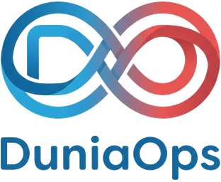

Software Project Rescue
Assess the codebase, release path and operational risks, then agree the smallest useful recovery route.
Explore Project Rescue →A common portal gave users one place to work, while a gradual modernisation route brought clearer boundaries to a dispersed set of applications and services.
The organisation relied on several portals and applications. Handoffs between them were difficult to follow, and the fragmented environment made errors, work tracking and communication across systems harder to manage.
Replacing everything at once would have introduced unnecessary operational risk. The more useful starting point was to create a coherent user entry point, then modernise the parts of the estate that would benefit from change.
The applications were brought behind a shared portal using a micro-frontend approach. Selected screens and modules were rewritten; other applications remained in place where that was the safer practical choice. This let the organisation move users towards one experience without requiring a big-bang migration.
Backend capabilities were then centralised and separated into services with clearer boundaries, so components could operate more independently and the wider system became easier to maintain and govern.
The solution was completed, released to production and handed over to the customer. The customer accepted the operational improvements, and performance measures were used to demonstrate them. No numerical result is published because no specific metric or permission to disclose one is part of this brief.
Disclosure: selected experience from an earlier partner-led engagement. This is not a direct DuniaOps client case study, testimonial or endorsement. Client and delivery-partner names, logos, quotations, identifying details and numerical performance values are withheld.
If your organisation is taking over an existing system, establish ownership and operational risk before choosing the size of the engineering intervention.
Assess the codebase, release path and operational risks, then agree the smallest useful recovery route.
Explore Project Rescue →Use a practical list covering repositories, accounts, data, security, monitoring and support responsibilities.
Open the checklist →
Share the immediate constraint and the decision your team needs to make.